Product Manufacturing Information (PMI)
PMI overview
Product Manufacturing Information, or PMI, consists of dimensions and annotations that are added to the 3D model and can be used in the review, manufacturing, and inspection processes.
In synchronous and ordered modeling, PMI dimensions also provide an important design modification tool. By editing dimension values, you can make changes to the model. You can lock and unlock dimensions to control how connected model faces respond to dimension value edits. And you can control the direction in which dimension edits are applied. This greatly simplifies the process of design, testing, and update.
The Solid Edge PMI application combines the functionality of adding dimensions and annotations, generating fully rendered 3D model views with 3D section views, drawing formatting, and publishing the information.
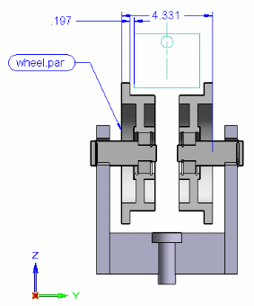
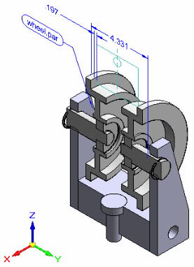
You can add these types of PMI:
-
Dimensions—Smart Dimension, Distance Between, Angle Between, Coordinate Dimension, Angular Coordinate Dimension, Symmetric Dimension.
-
Annotations—Leader, Balloon, Callout, Surface Texture Symbol, Weld Symbol, Edge Condition, Feature Control Frame, Datum Frame, Datum Target.
For more information about adding these PMI elements, see the Help topic, PMI dimensions and annotations.
You can create these types of views:
-
3D section views, which can be added to or removed from,
-
The dimensions you add using the ordered PMI dimensioning commands are always driven dimensions.
-
You can choose whether a synchronous PMI dimension added to the model should be locked or unlocked.
-
The section views and model views are associative to the 3D model. When the 3D model changes, the section views and model views also update.
PMI commands
The PMI tab conveniently groups the commands you need to:
-
Add PMI dimensions and annotations directly in the 3D model.
-
In the ordered environment, copy 2D dimensions and annotations from a sketch to the PMI 3D model.
-
Create model and section views of the 3D model.
In the synchronous environment, you also can use dimension and annotation commands located on any other tabs on the ribbon to add PMI to the model, as well as to dimension sketches. It is the type of element you select (model edge or sketch geometry), not the command, that determines whether a dimension is a three-dimensional PMI dimension or a two-dimensional sketch dimension.
For information about using PMI commands, see the Help topic, Working with 3D PMI.
PathFinder, PMI, and model views
PathFinder accesses and controls all PMI elements and 3D model views for the model. If a sheet metal model has two different states, designed and flattened, for example, then the PMI and model views are owned by the model state in which they are created.
-
The PMI collection located on PathFinder contains expandable subcollections of all Dimensions, Annotations, and Model Views in the active document.
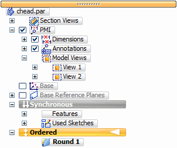
-
If the PMI collection is empty, then it is not displayed in PathFinder.
-
When you define a PMI model view, its name is added to the Model Views collection.
-
A separate Section Views collection, located in PathFinder above the PMI collection, contains all 3D section views that have been defined in the document.
-
PMI elements and section views can appear multiple times in PathFinder. When one of these items is selected, all occurrences of the item are selected.
This table explains the PMI-related icons used in PathFinder.
A node is the top-level entry in a PMI collection or in a subcollection under a defined model view.
|
Legend |
|
|---|---|
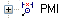 |
PMI collection symbol |
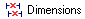 |
Dimension node, shown (in PMI or Model Views collection) |
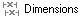 |
Dimension node, hidden (in PMI or Model Views collection) |
|
PMI dimension element, shown |
|
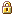 |
PMI dimension locked (synchronous) |
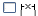 |
PMI dimension element, hidden |
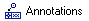 |
Annotation node, shown (in PMI or Model Views collection) |
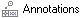 |
Annotation node, hidden (in PMI or Model Views collection) |
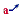 |
PMI annotation element (callout symbol example), shown |
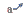 |
PMI annotation element (callout symbol example), hidden |
|
Model Views collection |
|
|
Defined model view |
|
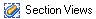 |
Section Views collection |
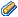 |
Section view, applied |
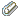 |
Section view, not applied |
-
The check box in front of each PMI element listed in PathFinder turns the element on and off. There are also Show, Hide, Show All, and Hide All commands on the shortcut menu for each group of Dimensions and Annotations.
-
Model views are not shown or hidden, but instead they are applied to the graphic window using the Apply View command.
-
Defined 3D sections are applied and removed using the Apply Cut command.
The following image and corresponding table explain the color codes assigned to dimensions.
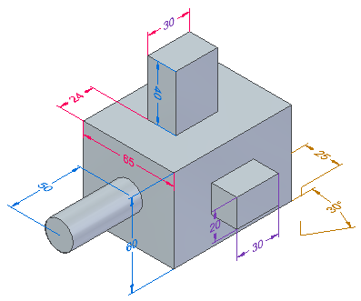
|
PMI dimension color codes |
|||
|
Color |
Solve condition |
Dynamic Edit? |
Attached to |
|
Blue |
Free |
Yes |
Synchronous elements |
|
Red |
Driving, dimension constrained |
Yes |
Synchronous elements |
|
Purple |
Driven by other dimension or variable |
No |
Ordered elements or otherwise uneditable PMI |
|
Brown |
Not available |
No |
Not adequately attached to any element |
Within the PMI collection, different types of dimensions—for example, linear, radial, angular—display unique symbols and element names on PathFinder. Also, their respective color code is displayed.
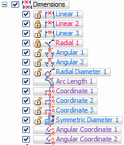
Annotations work the same way, with their own set of symbols and specific naming conventions.
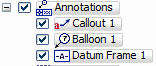
To learn more about showing and hiding PMI elements, see the Help topic, Working with 3D PMI.
Reviewing a PMI model
A special PMI model review mode allows you to review all of the model views defined in the document along with their associated PMI data.
When you select the Review Command (PMI Model Views), a PMI Model Review command bar is displayed to guide you through the review of each model view.
For more information, see the Help topic, Creating 3D model views with PMI.
Sharing a PMI model
There are many ways you can share 3D models and their attached data.
-
Use the Drawing View of Active Model command to generate a drawing of the dimensioned model currently displayed in the graphics window. You also can use the Drawing View of Active Model command to generate a drawing of any model view “snapshots” you have created in the document.
-
Use the Apply View command to display a model view with a special orientation in the graphics window, and then use the Print command to print it.
-
Use the Save As Image command to save the contents of the graphic window in an image file format.
-
Publish them to Solid Edge Viewer using the Save As command to save the information to .jt format.
Creating drawings of a PMI model
You can use the Drawing View Wizard to produce drawings from a 3D model with PMI. The data in the model views—view orientation, 3D sections, and PMI dimensions and annotations—are copied to the drawing view. The PMI text copied to the drawing retains its three-dimensional aspect.
There are two basic ways to do this:
-
You can generate the drawing from the current model representation in the graphics window.
-
You can generate drawings from alternate model views that you have created using the View command. Model views allow you to apply special formatting, backgrounds, and view orientations to your model.
After you copied one or more PMI model views to the drawing, you can:
-
Turn associativity with the model view on and off.
-
Change the PMI model view currently displayed in the drawing view.
-
Choose a different render mode—including color shading—for each of the model views on the drawing.
For more information, see the Help topic, Create a PMI drawing.